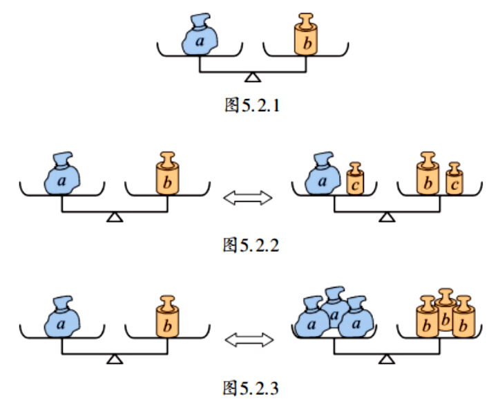

如图，天平处于平衡状态，它表示左、右两个盘内物体的质量 $a$、$b$ 是相等的。如图5.2.2，若在平衡天平两边的盘内都添上（或都拿去）质量相等的物体，则天平仍然平衡。如图5.2.3，若把平衡天平两边盘内物体的质量都扩大相同的倍数或都缩小到原来的几分之一，则天平仍然平衡。
1. (1) 能，根据性质1；(2) 能，根据性质2（两边除以3再乘-1）；(3) 能，根据性质2（两边除以2）；(4) 能，根据性质2（两边乘6）。
2. (1) 加2，性质1；(2) 加2x，性质1；(3) 除以2，性质2，填 $\frac{7}{2}$；(4) 乘2，性质2，填6。
我国古代很早就有“权衡”的概念——用天平或杆秤称量物体，追求两边的平衡。《九章算术》中虽然出现了“方程”一词，但更早的《墨经》里就记载了“平，同高也”，意思是平行线间的距离相等，这体现了古人对“相等”的认识。正是基于生活中随处可见的平衡现象，人们逐渐抽象出等式的基本性质：平衡的两边同时增加或减少相同的量，仍然平衡；同时扩大或缩小相同的倍数，仍然平衡。这种朴素的思考，为后来代数学的发展奠定了基础。
抽象思想： 从天平平衡抽象出等式的基本性质。
模型思想： 等式的性质是解方程的理论模型。
推理思想： 运用等式的性质进行等量变换，培养逻辑推理能力。
✨ 等式如天平，两边同变仍平衡，性质是解方程的根本。✨